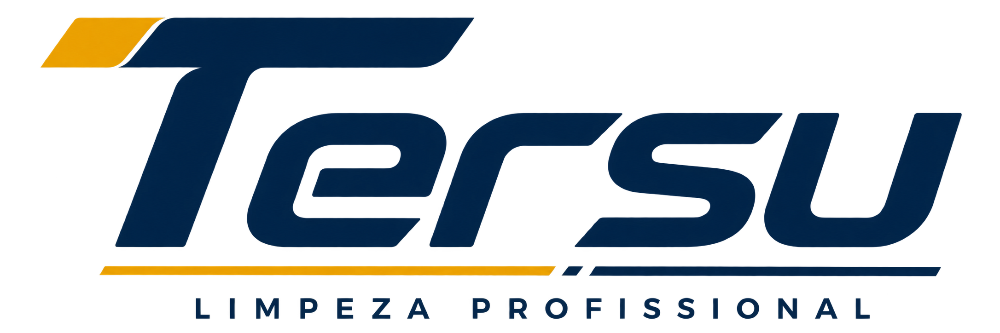

🧺
Lavanderia profissional
Soluções para pré-lavagem, lavagem, alvejamento, neutralização e acabamento com foco em desempenho e cuidado dos tecidos.
Solicitar indicação →A Gold Paper conecta sua operação a químicos profissionais, papéis descartáveis, equipamentos e máquinas de limpeza — com atendimento consultivo para cada ambiente.
Mais eficiência, padronização e melhor experiência para equipes e clientes.
Escolha pela necessidade da sua operação. Nós ajudamos a dimensionar a solução, o equipamento e a rotina de uso.
Soluções para pré-lavagem, lavagem, alvejamento, neutralização e acabamento com foco em desempenho e cuidado dos tecidos.
Solicitar indicação →Equipamentos para limpeza mecanizada de áreas comerciais, industriais e grandes operações.
Ver opções →Soluções para cozinhas profissionais que precisam de agilidade, padronização e produtividade.
Falar com especialista →Produtos para superfícies, utensílios, equipamentos e áreas de preparo, com aplicações profissionais específicas.
Montar uma solução →Abastecimento de papéis e consumíveis para banheiros, cozinhas, áreas comuns e ambientes corporativos.
Pedir cotação →Utensílios e equipamentos para elevar a produtividade e a qualidade da rotina de higienização.
Consultar linha →Máquinas profissionais de limpeza de piso com atendimento comercial e suporte na escolha do equipamento.
Conhecer Tersu →Acesse uma página completa com aplicações, produtos, explicações e imagens do material técnico.
Ambientes diferentes exigem protocolos, produtos e equipamentos diferentes. A Gold Paper trabalha por aplicação.

Uma frente dedicada a máquinas profissionais de limpeza de piso, com orientação para escolher o equipamento certo para área, produtividade e rotina da sua operação.
Ambiente, volume, rotina, equipe e desafios de limpeza.
Químicos, consumíveis, equipamentos e máquinas conforme a aplicação.
Orçamento comercial objetivo, sem excesso de complexidade.
Reposição e novas necessidades acompanhadas pelo time comercial.
Atuamos com soluções de higiene e limpeza profissional para empresas que precisam de eficiência, organização e continuidade de abastecimento. Nosso portfólio reúne químicos profissionais, papéis descartáveis, equipamentos e máquinas.
Mais do que vender itens isolados, a proposta é conectar cada ambiente à solução adequada para sua rotina.
Converse com nosso comercial →Se preferir, fale direto com nosso atendimento comercial.
Abrir WhatsAppO atendimento é voltado ao mercado profissional. A indicação é feita conforme ambiente, rotina, volume e necessidade.
Sim. O site foi estruturado para apresentar a Gold Paper como fornecedora de diferentes frentes de higiene e limpeza profissional.
Não. Os valores são tratados em orçamento para que a proposta considere produto, quantidade e necessidade da operação.
Sim. A Gold Paper é apresentada neste projeto como distribuidora da marca Tersu.
Conte o que você precisa. Nosso comercial direciona sua solicitação para a solução mais adequada.